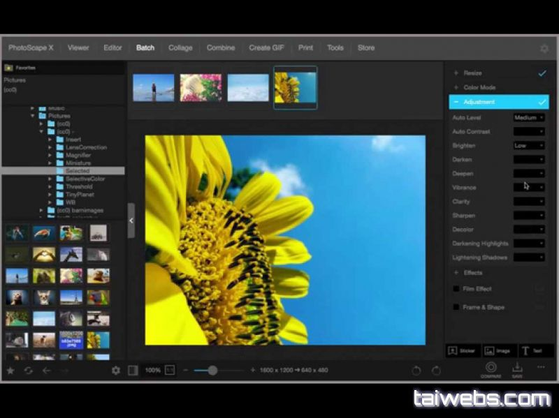

Графічний редактор PhotoscapeX
Це багатофункціональний додаток, з інтуїтивно зрозумілим інтерфейсом. Рідко зустрінеш безкоштовну програму, яку можна рекомендувати широкому колу людей з різними потребами та здібностями, але це саме той випадок. Це цілий пакет із певних редакторів та інструментів, які виконують ту чи іншу роль.
Системні вимоги
- Операційна система:Microsoft Windows 7/8/8.1/10
- Процесор:Двоядерний процесор Intel або пізніша версія
- Оперативна пам'ять:1 GB
- Вільне місце:250 MB
Інтерфейс
Перегляд фотографій здійснюється «в'ювером», а накласти ефекти, фільтри, розмиття можна в редакторі. Там фотографії обрізаються, склеюються, масштабуються тощо. Розрізняють звичайний редактор та пакетний. Також є інструменти для захоплення екрану, створення GIF та багато іншого.
- Великий додаток, який використовується для створення скріншотів екрана., створювати мозаїки, а також анімовані GIF-файли та редагувати фотографії
- Дозволяє конвертувати формати RAW
- Оснащений дуже простим та легким процесом установки
- Отримав зручний інтерфейс
- Оснащений вичерпною довідкою, яка гарантує, що всі категорії користувачів можуть працювати з PhotoScape без будь-яких труднощів
- Отримав безліч опцій, щоб ви могли легко керувати своїми зображеннями та редагувати їх
- Дозволяє змінювати розмір, обрізати, обертати, а також перевертати елементи
- Також можна налаштувати різкість, яскравість, контраст та підсвічування
Особливості
Переваги та недоліки
Переваги
- Безкоштовність продукту
- Простий в освоєнні інтерфейс
- Наявність навчальних відеороликів
- Широкий вибір інструментів і налаштувань
- Можливість пакетної обробки фото
- Великий набір параметрів друку та підготовки до фотографій
- Можливість зміни метаданих зображень
- Підтримка великої кількості форматів файлів
- Можливість безпосередньої публікації зображень в Facebook і Twitter
Недоліки
- Відсутність локалізації українською/російською мовою
- Відсутність технічної документації, доступної для завантаження
- Складність процесу встановлення, відсутність контролю над ним, а також необхідність використання облікового запису Microsoft